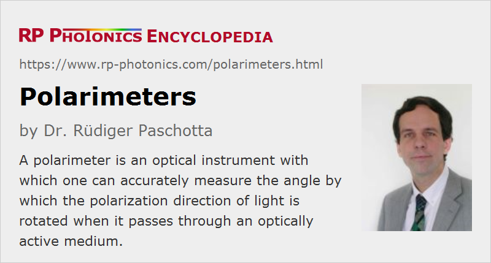

Polarimeters
Definition: instruments for measuring the rotation angle of optical polarization caused by optically active substances
More general term: optical metrology instruments
German: Polarimeter
Categories: photonic devices, optical metrology
How to cite the article; suggest additional literature
Author: Dr. Rüdiger Paschotta
A polarimeter is an optical instrument with which one can accurately measure the angle by which the polarization of light is rotated e.g. when it passes through an optically active medium.
Operation Principle of Polarimeters
The basic operation principle of a polarimeter comprises the following:
- One generates light with an accurately prepared linear polarization state, usually by passage through a polarizer.
- That light is sent through the optically active sample, which somewhat rotates the polarization direction.
- After passage through the sample, one detects the modified orientation of the polarization by passing the light through another linear polarizer (called the analyzer), which can be rotated around the beam axis.
The simplest method is to rotate the analyzer into a position for which the transmission of optical power is at its minimum (which should be only a very tiny fraction of the input power), and to register the angular orientation where that condition is met.
Figure 1 shows the basic optical setup of such an instrument. The used method is called polarimetry.
Details and Refinements of the Method
The first polarizer is in principle not necessary if the used light source already emits linearly polarized light – for example, that is the case for various kinds of lasers. However, the polarizer may still be used in order to obtain a reliably high degree of linear polarization with a well-defined orientation.
The light source should not have a too large optical bandwidth, because the degree of optical activity may vary within that bandwidth, and that would lead to some broadening of the observed intensity minimum and thus to a reduced accuracy of the measurement. Nevertheless, one does not need to use a laser as a quasi-monochromatic light source; instead, one may also use a light-emitting diode LED, for example, or a substantially more broadband light source (e.g. an incandescent lamp) in combination with an optical bandpass filter (e.g. an interference filter).
The used polarizers should have a high degree of extinction. In practice, one often uses Nicol prisms or similar high-quality devices.
The optical mount of the analyzer must be made with precise fine mechanics and equipped with a fine scale in order to allow the user to accurately determine the angular orientation of the polarizer's axis.
It is preferable that the investigated sample is quite homogeneous, since otherwise one would not obtain a uniform amount of polarization rotation, and the measurement accuracy would be reduced.
An improved method, based on an intervention of the Austrian physicist Ferdinand Franz Lippich in the late 19th century, uses an additional optical element which introduces some rotation of the polarization direction for about half of the beam area after the polarizer. One can then not obtain complete darkness after the analyzer for any orientation. Instead, one adjusts the analyzer for equal brightness of both areas. Lippich's approach allows for more accurate measurements, essentially because the brightness difference depends linearly on the angular deviation, while the brightness in the simple polarimeter as described above depends on the square of the angular deviation from the minimum intensity point.
Some advanced polarimeters can perform automated measurements, where the analyzer is rotated and the device itself determines the analyzer orientation for minimum optical power transmission. Using a precise mechanical drive (with fine resolution and a high degree of reproducibility) and optimized software (e.g. utilizing data for multiple orientations, to which a curve can be fitted), one can obtain a substantially higher measurement accuracy than for manual measurements, and not only a much reduced measurement time of e.g. one second instead of multiple seconds. Such an instrument may also be quite simple to handle and less prone to possible errors of the operator. The amount of optical activity, as calculated from the measured rotation angle and length of the sample, may directly appear on a digital display.
There are instruments where the analyzer is continuously rotating with a constant angular velocity, and the phase of the resulting output signal is used to derive the optical activity.
Instead of a rotatable analyzer, one may use a Faraday rotator in combination with a wire coil, mounted before the analyzer, which in that case does not need to be rotated. One may then determine the required electrical current through the coil which produces a suitable amount of optical activity through the Faraday effect, such that minimum transmission through the analyzer is achieved. That method can be both quite accurate and fast.
Application of Polarimeters in Research and Industry
Polarimeters can be used in scientific research and in industry wherever the magnitude of optical activity of a substance must be determined. If the specific rotation of the substance is already known, and it is e.g. dissolved in water, the concentration of the substance can be determined from the measured degree of optical activity. For example, with that method one can accurately and quickly determine the concentration of sugar in water, which is of practical interest e.g. in the sugar industry and for the production of wines. Such instruments for measuring sugar concentrations are called saccharimeters.
In some cases, a substance is a mixture of two enantiomers, i.e., versions of molecules which are mirror images of each other. Each of them has an optical activity of one sign, i.e., the two enantiomers rotate the polarization direction in different directions, and the angular rotation contributions from both enantiomers simply add up – for example to zero in case of an racemate, i.e., a mixture with equal densities of both enantiomers. In many other respects, such as refractive index and light absorption, those types of molecules behave in identical ways. The measurement of optical activity can then be used to determine the ratio of concentrations of both versions. In a biological context, however, one often essentially has only one of the two possible enantiomers, and optical activity measurements are then more likely to be used simply to measure the concentration of that version.
Suppliers
The RP Photonics Buyer's Guide contains 8 suppliers for polarimeters.
Questions and Comments from Users
Here you can submit questions and comments. As far as they get accepted by the author, they will appear above this paragraph together with the author’s answer. The author will decide on acceptance based on certain criteria. Essentially, the issue must be of sufficiently broad interest.
Please do not enter personal data here; we would otherwise delete it soon. (See also our privacy declaration.) If you wish to receive personal feedback or consultancy from the author, please contact him e.g. via e-mail.
By submitting the information, you give your consent to the potential publication of your inputs on our website according to our rules. (If you later retract your consent, we will delete those inputs.) As your inputs are first reviewed by the author, they may be published with some delay.
See also: polarization of light, optical activity, polarizers
and other articles in the categories photonic devices, optical metrology
|  |
If you like this page, please share the link with your friends and colleagues, e.g. via social media:
These sharing buttons are implemented in a privacy-friendly way!